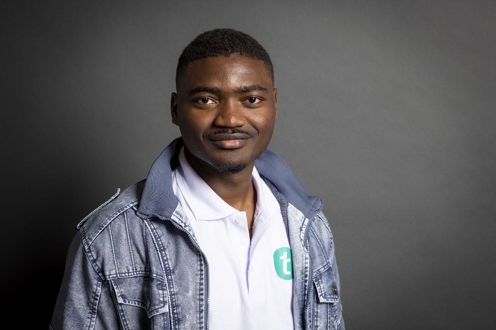

I build perception and localization systems that turn research-grade vision algorithms into deployable autonomy for UAVs and mobile robots. My focus is on deterministic state estimation, robust sensor fusion, and resilient control-ready outputs for systems operating in real outdoor environments.
I combine modern C++ software design, probabilistic estimation, neuromorphic vision, and spatial geometry to solve hard problems at the intersection of perception and autonomy. I treat perception as a full-stack engineering problem: sensor modeling, synchronization, runtime performance, outlier rejection, and actuator-level integration.
My work is validated on embedded platforms, ROS/ROS2 stacks, Unreal Engine simulation, Nvidia Jetson hardware, and live field trials. I enjoy bringing complex sensor pipelines from concept to robust deployment in systems that must work outside controlled labs.
Architecture: Modern C++, SIFT, essential matrix decomposition, nonlinear sigmoid control loops.
Challenge: Achieving deterministic quadcopter stabilization and repositioning across unpredictable, non-planar terrain where homography-based assumptions fail.
Solution: Built a custom monocular VO pipeline that extracts and matches SIFT features across sequential frames, recovers relative ego-motion via essential matrix decomposition, and feeds continuous pose estimates into a bespoke sigmoid controller for smooth aggressive trajectory updates.
Impact: Delivered a perception-to-action workflow capable of stable, autonomous repositioning in complex outdoor environments.
Architecture: Modern C++ object-oriented design, ROS2, Nvidia Jetson, IDS uEye event camera, affine RANSAC optimization.
Challenge: Overcoming severe temporal noise and asynchronous sparsity from neuromorphic DVS sensors, where frame-based tracking and rigid geometric matchers break down.
Solution: Designed a probabilistic matcher enforcing microsecond-level temporal consistency with a Gaussian residual model, motion-adaptive variance scaling, and triplet validation before high-speed Affine RANSAC outlier rejection.
Performance: Single-threaded pipeline processing 3.5 Meps on embedded Jetson hardware with reduced end-point error on the MVSEC benchmark.
Architecture: Modern C++, ROS, extended Kalman filters, LiDAR point clouds, stereo epipolar matching.
Challenge: Building resilient localization and dense mapping for agricultural vehicles exposed to wheel slip, sensor dropouts, and unstructured terrain.
Solution: Developed a multi-sensor fusion architecture that tightly and loosely couples stereo, LiDAR, and IMU streams. An EKF backend continuously estimates 6-DOF state while fused stereo and LiDAR fields produce real-time 3D surface reconstructions.
Impact: Enabled robust terrain-aware navigation and survey-grade mapping for autonomous field robotics.
Architecture: Python, ROS, pyramidal Lucas-Kanade optical flow, epipolar geometry, KITTI benchmark, DJI Tello hardware.
Challenge: Preventing catastrophic drift in monocular VIO caused by false pixel matches under rapid, erratic quadcopter motion.
Solution: Built an adaptive tracking framework that filters pyramidal LK flow vectors with epipolar constraints, rejecting geometrically invalid tracks and maintaining stable state estimates.
Validation: Tested in Unreal Engine simulation, live DJI Tello flights, and KITTI benchmark datasets; work accepted for publication in IEEE Xplore REM 2024.
Architecture: ROS, Unreal Engine, Linux system configuration, 3D CAD modeling, MATLAB.
Challenge: Bridging physical sensor realities and safe simulated validation for autonomous drone systems.
Solution: Built photorealistic Unreal Engine drone worlds integrated with ROS for visual odometry and autonomy testing, then derived analytical noise profiles from LiDAR and encoder data to model physical sensor uncertainty under motion.
Impact: Delivered a full-stack workflow for hardware-informed simulation, sensor modeling, and safe autonomy validation.
TH Ingolstadt | Ingolstadt, Germany
Mar 2025 – Present
TH Würzburg-Schweinfurt | Schweinfurt, Germany
Mar 2020 – Aug 2024
Bachelor's Thesis (Grade: 1.3)
Visual Odometry of a Drone with a Monocular Camera.
batchaya.yacynte@gmail.com
Ingolstadt, Germany